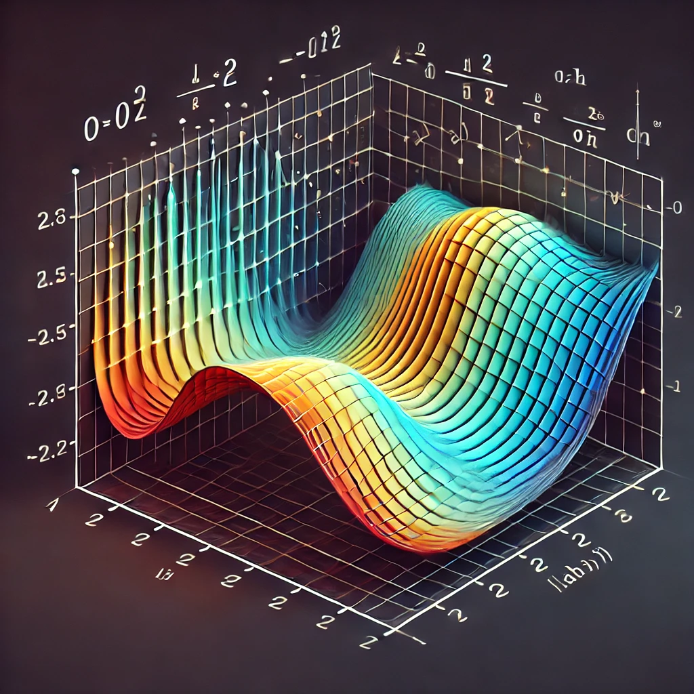

What Is Partial Differential Equation
A partial differential equation (PDE) is a mathematical equation that involves a function with multiple variables and its partial derivatives, describing how the function changes with respect to each variable independently. PDEs are used to model complex phenomena that depend on several factors, like time and space, such as heat conduction, wave propagation, fluid flow, and many physical and engineering processes. For example, the heat equation—a well-known PDE—describes how temperature changes over time across a spatial region. In essence, PDEs allow us to capture and analyze how quantities evolve in multidimensional settings.